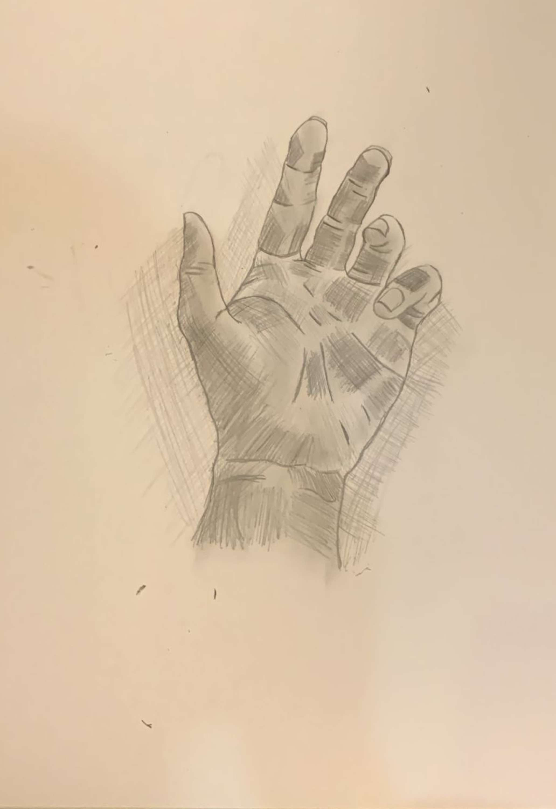

Karya yang Saya Buat


Mahasiswi DKV - Universitas Prima Indonesia
Saya adalah mahasiswi semester 2 di Universitas Prima Indonesia jurusan DKV. Saya tertarik pada dunia desain dan ingin mengembangkan kemampuan saya, terutama dalam bidang seni visual dan digital. Saya juga penyayang hewan, memiliki seekor anjing ras Samoyed bernama Momo.
Ini adalah Momo, anjing yang sangat saya sayangi. Ia ras Samoyed, memiliki mata sipit dan tingkah laku yang lucu.
Email: tynessaloryn06@gmail.com
WhatsApp: +6282165776507